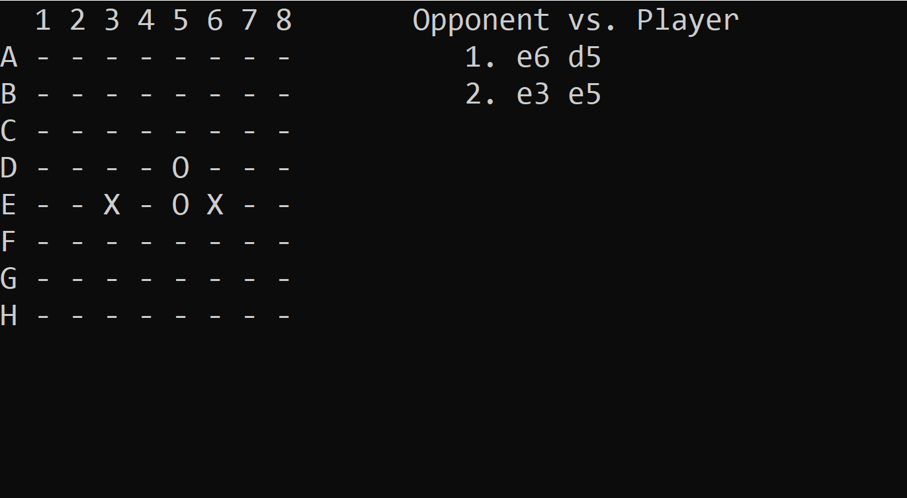

Repository
If you want to check out the code for this project click this link.
Introduction
This was a class project in which we were required to build an artificial intelligence to play the Four-in-Line game against other players (other AIs or human players). The game is similar to Connect 4, with the exception that pieces do not go down to the bottom most position in each column.
Description
The program starts by setting up the limitations of the artificial intelligence. The standard time limit in the program is 15 seconds per play. This time limit is used to cap the search done by the artificial intelligence so that it does not take an entire day to make its play. After the AI makes its play, the player does not have any time limit do make his or her move.
The artificial intelligence makes its play under a time constraint so that it can go as deep as the time limit allows it to go. During most of the game, the AI can reach 5-6 levels under a 15s constraint, which means it can predict 5-6 moves ahead and make the best play according to those predictions. Towards the end of the game however, there are fewer possibilities to consider, so the AI can predict go even deeper, and predict 8-10 plays ahead.
To increase the depth that the AI can go, I modified the heuristic function so that even when a player does not have a winning board state but it is inevitably going to have one, the heuristic function returns a winning board state. This modification of the heuristic function increase the search depth from 5-6 to 7-8, which made the game even harder to play against the AI.